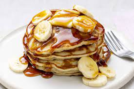

Dad's Double Whole Grain Pancakes

Did you know the pancake's shape and structure varies worldwide. In the United Kingdom,
pancakes are often unleavened and resemble a crêpe.
In North America, a leavening agent is used (typically baking powder)
creating a thick fluffy pancake. A crêpe is a thin Breton pancake of French origin
cooked on one or both sides in a special pan or crepe maker to achieve a lacelike network of
fine bubbles. A well-known variation originating from southeast Europe is a palačinke, a thin moist
pancake fried on both sides and filled with jam, cream cheese, chocolate, or ground walnuts, but many
other fillings—sweet or savoury—can also be used. My father's not so secret pancake recipe will knock you right out of your
socks!
Ingredients
- 1 cup all-purpose flour
- 1 ⅓ cups dry milk powder
- 1 teaspoon baking powder
- 1 ½ teaspoons baking soda
- 1 teaspoon salt
- 2 cups whole wheat flour
- ¾ cup white sugar
- 4 eggs, lightly beaten
- 3 cups water
- ¼ cup butter, melted
- 3 tablespoons vinegar
Directions
- In a large bowl, sift all-purpose flour, milk powder, baking powder, baking soda and salt. Stir in whole wheat flour. In a small bowl, combine sugar, eggs, water, butter
and vinegar. Make a well in the flour mixture, and pour in the egg mixture. Mix until smooth..
- Heat a lightly oiled griddle or frying pan over medium heat. Pour or scoop the batter onto the griddle, using approximately
1/4 cup for each pancake. Cook until pancakes are golden brown on both sides; serve hot.